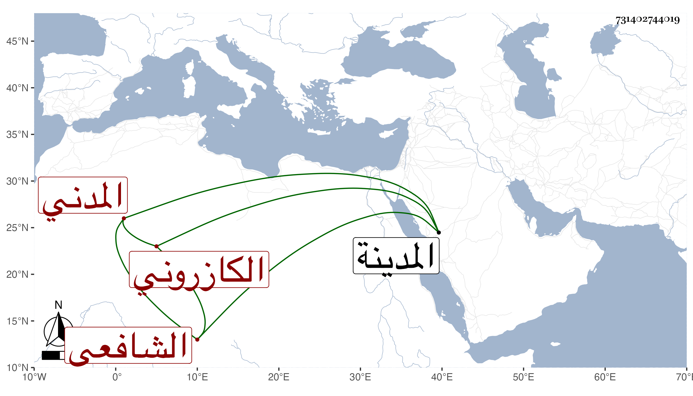

0902Sakhawi.DawLamic.ITO20230111-ara1.EIS1600.731402744019
Biography ID: 731402744019
527
أحمد بن محمد بن محمد بن محمد تقي بن الشيخ محمد روزبة الشهاب بن الشمس بن فتح الدين أبي الفتح الكازروني المدني الشافعي الآتي أبوه وجده ويعرف كل منهما بابن تقي بفتح المثناة وكسر القاف . لازمني بالمدينة في سماع الكثير وقرأ اليسير وكتب القول البديع وسمعه من لفظي وهو ممن سمع قبل ذلك على أبي الفرج المراغي وابنة أخيه فاطمة ابنة أبي اليمن المراغي .
